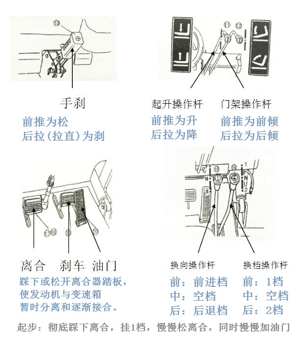
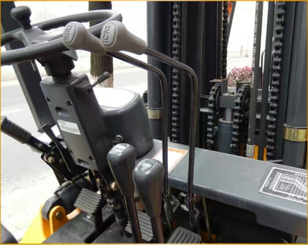

1、叉车作业前，应检查外观，加注燃料、润滑油和冷却水。
2、检查启动、运转及制动性能。
3、检查灯光、音响信号是否齐全有效。
4、叉车运行过程中应检查压力、温度是否正常。
5、叉车运行后还应检查外泄漏情况并及时更换密封件。
6、电瓶叉车除应检查以上内容外，还应按电瓶车的有关检查内容，对电瓶叉车的电路进行检查。
叉车起步是驾驶训练最常用、最基础的科目，主要包括平路起步和坡道起步。叉车完成动操作后，发动机运转正常，无漏油、漏水的现象，货叉升降平稳，门架倾斜到位，便可以挂档起步。
1、上车前检查车身、轮胎等有无异常。
2、上车后检查档位是否是空档，离合器、刹车、油门是否正常，并系好安全带。
3、取下钥匙插入向右旋转一下电路接通，稍等片刻再向右旋转，启动发动机。
1、平路起步
叉车在平路上起步时，身体要保持正确的驾驶姿势，两眼注视前方道路和交通情况，不得低头看。操作要领是：
右手向下按下门架操作杆使门架略后倾。
右手再向下按下起升操作杆使货叉离地面约30mm


a、左脚迅速踏下离合器踏板，右手将变速杆挂入一档，换向杆挂入前进挡或倒档。一般要用低速档起步，可用一档。
b、左手向前推下手刹、打转向灯、鸣笛。
c、在慢慢抬起离合器踏板的同时，平稳的踏下加速踏板，使叉车慢慢起步。
起步时应保证迅速、平稳，无冲动、振抖、熄火现象，操作动作要准确。
平稳起步的关键是离合器踏板和加速踏板的配合。离合器与加速踏板的配合要领：左脚快抬听声音，音变车抖稍一停，右脚平稳踏加速踏板，左脚慢抬车前进。
2、坡道起步
（1）操作要领
a、在10°坡道上行驶至坡中停车，叉车发动机不熄火，挂入空挡，靠制动及加速踏板保持动平衡，车不下滑。
b、起步时，挂入前进一档，踩下加速踏板，同时松抬离合器踏板至半联动，并松开驻车制动器，再接着逐渐加速，松开离合器踏板，起步上坡前进。
c、起步时，若感到后溜或动力不足，应立即停车，重新起步。
（2）操作要求
a、坡道上起步时，起步平稳，发动机不得熄火。
b、叉车不能下滑，车轮不能空转。
c、空挡时不能发出声响。
1、行驶时，货叉底端距地面高度应保持300－400mm、门架须后倾。
2、行驶时不得将货叉升得太高。进出作业现场或行驶途中，要注意上空有无障碍物刮碰。载物行驶时，如货叉又升得太高，还会增加叉车总体重心高度，影响叉车的稳定性。
3、卸货后应先降落货叉至正常的行驶位置后再行驶。
4、转弯时，如附近有行人或车辆，应发出信号、并禁止高速急转弯。高速急转弯会导致车辆失去横向稳定而倾翻。
5、内燃叉车在下坡时严禁熄火滑行。
6、非特殊情况，禁止载物行驶中急刹车。
7、载物行驶在超过7度和用高于一挡的速度上下坡时，非特殊情况不得使用制动器。
8、叉车在运行时要遵守厂内交通规则，必须与前面的车辆保持一定的安全距离。
9、叉车运行时，载荷必须处在不妨碍行驶的最低位置，门架要适当后倾，除堆垛或装车时，不得升高载荷。在搬运庞大物件时，物体挡住驾驶员的视线，此时应倒开叉车。
10、叉车由后轮控制转向，所以必须时刻注意车后的摆幅，避免初学者驾驶时经常出现的转弯过急现象。
11、禁止在坡道上转弯，也不应横跨坡道行驶。
12、叉车载货下坡时，应倒退行驶，以防货物颠落。
车辆行驶到货物前方，踩下离合把前进挡位放在空挡上再放开离合，控制升降杆升降到合适的位置，再踩下离合挂前进挡轻放离合车辆缓慢前行配合升降杆调整插入货物底部中部，踩离合挂空挡控制倾斜杆向上倾提升到合适的高度，踩离合挂后退档平稳运行；
车辆行驶到货物指定的方位，踩离合缓慢的前行到达后踩下刹车停稳，把档位挂到空挡缓慢放下货叉控制倾斜杆放平，踩下离合挂到后退。
1、操作要领：
a、松开加速踏板，打开右转向灯，徐徐向停车地点停靠。
b、踏下制动踏板，当车速较慢时踏下离合器踏板，使叉车平稳停下。
c、拉紧驻车制动杆，将变速杆和方向操纵杆移至空挡。
d、松开离合器踏板和制动踏板，关闭转向灯和点火开关，将熄火拉钮拉出后在关上。
2、操作要求：
a、熟记口诀：减速靠右车身正，适当制动把车停。拉紧制动放空挡，踏板松开再关灯（熄火）。
b、把握关键平稳停车的关键在于根据车速的快慢适当的运用制动踏板，特别是要停住时，要适当放松一下踏板。方法包括：轻重轻、重情重、间歇制动与一脚制动等。
本页共59段，2363个字符，5831 Byte(字节)